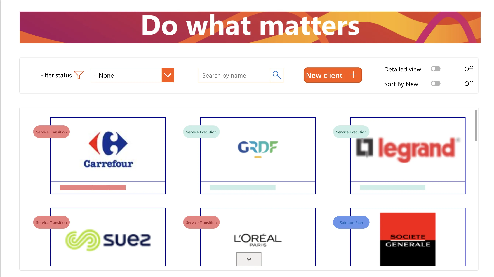
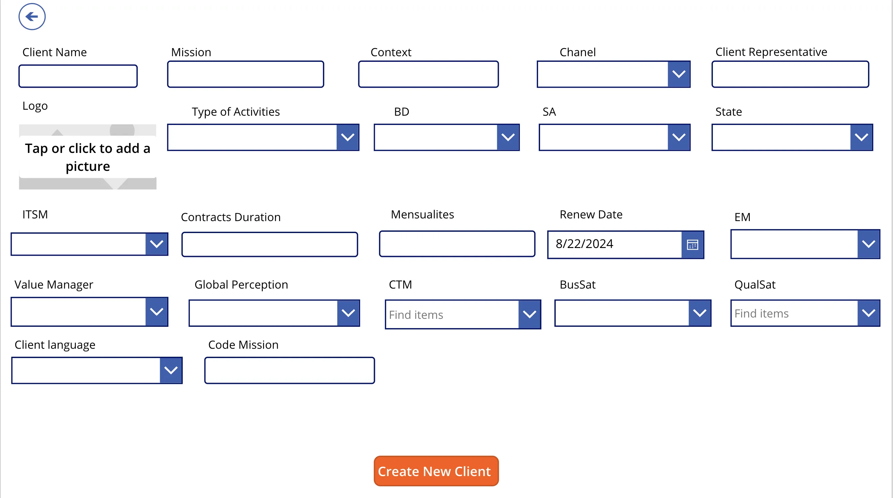
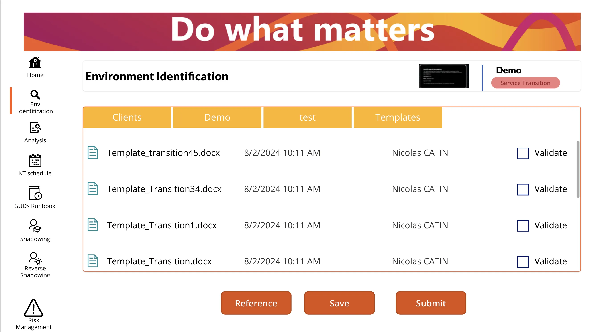
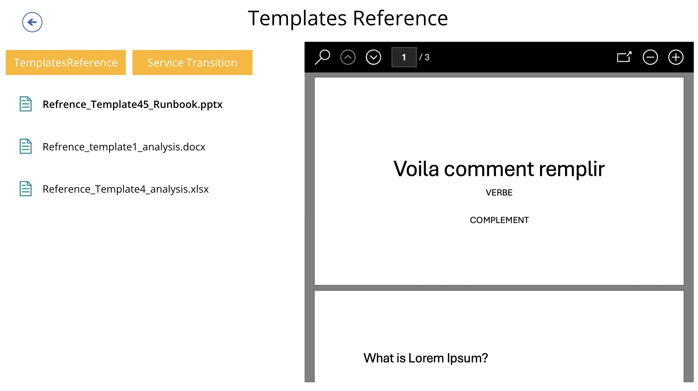
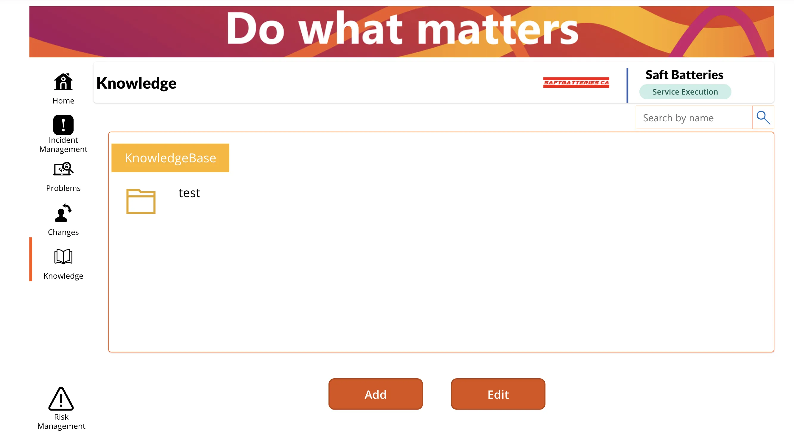
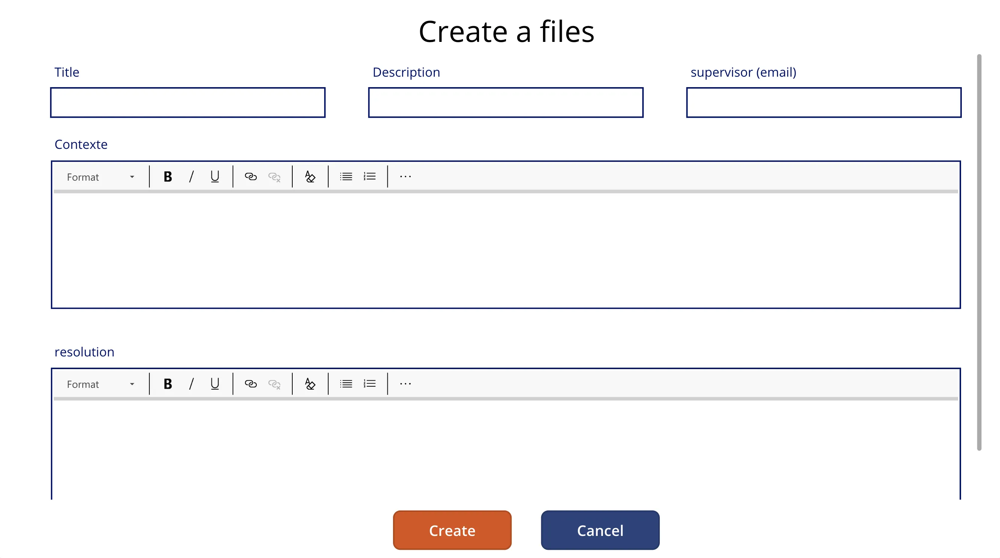
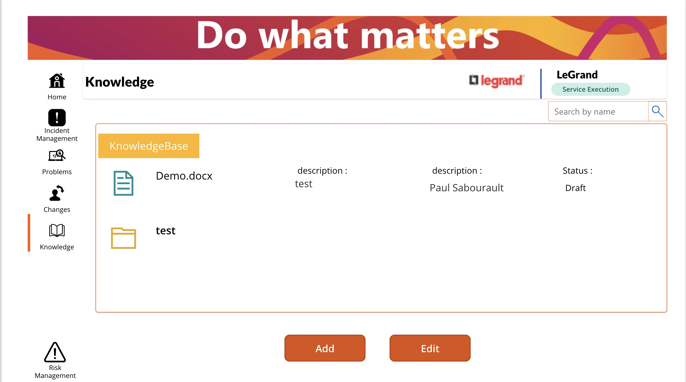

Internal case study
MSCD Contract Management App
A Power Apps solution deployed at Avanade to control every contract milestone — from intake to quality monitoring. This page compiles the UI states shared with stakeholders to explain the app story while keeping client data confidential.
Internal project developed at Avanade — live access no longer available. Presented through screenshots for confidentiality reasons.
Project context
MSCD orchestrates SharePoint, Dataverse and Power Automate flows so delivery teams can trace approvals, trigger alerts and update executive KPIs without switching tools. The canvas mirrors the Microsoft Design System for familiarity and fast adoption.
Key outcomes
- Centralized contract tracking from signature to delivery
- Standardized processes and validation steps across teams
- Improved visibility and traceability for quality management
- Reduced manual follow-up through automated workflows
Application gallery
Seven walkthrough captures covering overview metrics, approval pipeline, automation logs and mobile responsive states.







Want to see the data model?
I can walk you through the governance approach, automation steps and UX patterns that made MSCD a reliable internal tool.